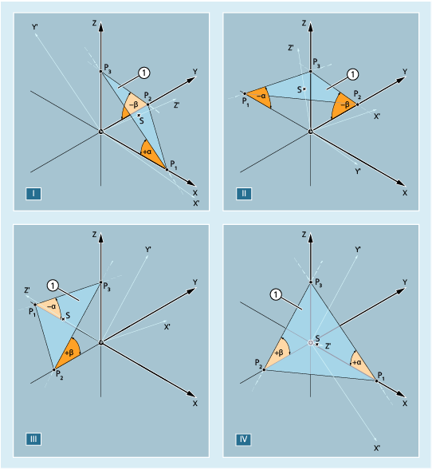

In the following diagram, the solid angles are shown for an example of a plane in quadrants I to IV. The inclined plane defines the alignment of the machining plane (here: G17) as a result of rotations of the workpiece coordinate system. The sign of the solid angle specifies the direction around which the coordinate system is rotated around the relevant axis.
① | Inclined plane as specification for the new G17 plane |
α, β | Solid angle of the inclined plane |
I ... IV | Quadrants 1 to 4 |
P1, P2, P3 | Point of intersection of the inclined plane with the coordinate axes of the WCS that has still not been rotated |
S | The point of intersection between the inclined plane and the Z' axis, which is perpendicular after the rotations |
The WCS is rotated as follows to align the G17 plane to the inclined plane: | ||
| Rotation around the y axis through the signed angle α | |
⇒ | The X' axis is aligned in parallel (colinear) to the intersection lines of the X-Y plane with the inclined plane | |
| Rotation around the X' axis through the signed angle β | |
⇒ | The Y' axis is aligned in parallel (colinear) to the intersection lines of the X-Y plane with the inclined plane | |
⇒ | The Z' axis is perpendicular to the inclined plane | |
⇒ | G17' lies in parallel to the inclined plane | |
The corresponding programming is as follows for each quadrant: | |
|
|
|
|
|
|
|
|
Specifying the solid angle does not define the orientation of the two-dimensional coordinate system within the plane (i.e. the angle of rotation around the surface normal vector). The position of the coordinate system is defined so that the rotated first axis lies in the plane which is formed by the first and third axes of the non-rotated coordinate system.
This means that
When programming X and Y, the new X axis lies in the original Z-X plane.
When programming Z and X, the new Z axis lies in the original Y-Z plane.
When programming Y and Z, the new Y axis lies in the original X-Y plane.
If a coordinate system position deviating from this default setting is required, then an additional rotation must be performed with AROT....